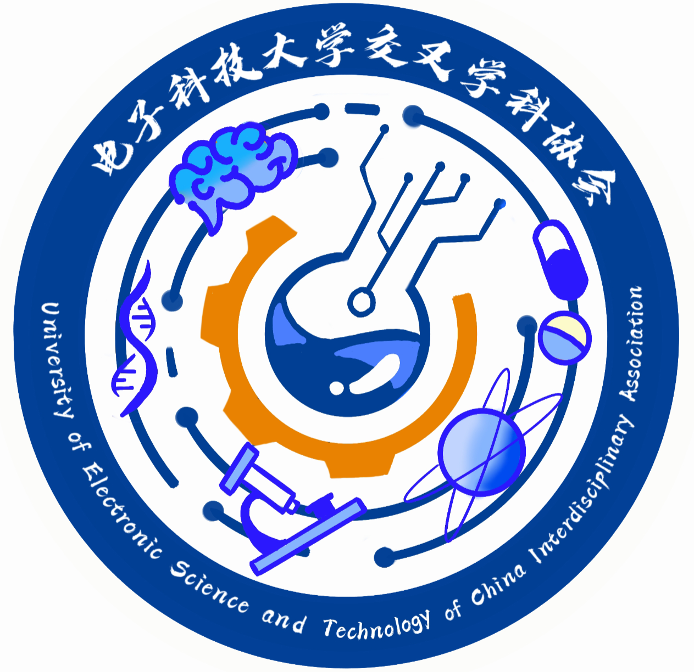

答辩资料分享
成电杰出学生答辩 PPT
用于电子科技大学“成电杰出学生”评选的答辩材料，供参考个人经历梳理、内容组织与展示方式。
下载 PPT公开下载，欢迎分享。

UESTC IA 返回官网答辩资料分享
用于电子科技大学“成电杰出学生”评选的答辩材料，供参考个人经历梳理、内容组织与展示方式。
下载 PPT公开下载，欢迎分享。
IA 信息分享群
科研、AI 与跨学科话题交流
扫码或点击加入交叉学科协会
群号：1033782608
把问题带进来，把视野打开
信息与视野
从公众号、UP 主到播客，交换值得关注的信息源，也聊聊如何走出自己的信息茧房。
AI 产品观察
从 Cue 出发，讨论移动端体验、Agent 的持续身份与服务入口，以及人与 AI 的协作方式。
工具与实践
项目规范、记忆管理、任务拆分与多会话协作：一起分享真实使用中的困惑和经验。
科研与成长
在算力、导师支持与研究积累之间，如何选择方向，并建立能够穿越周期的研究能力？